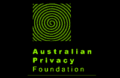
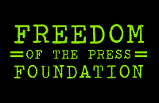
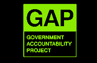
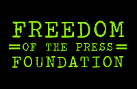
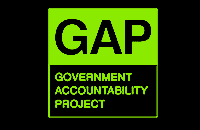
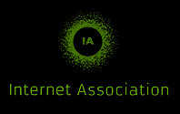
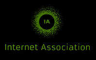
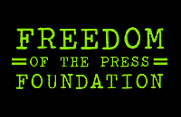
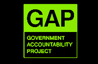
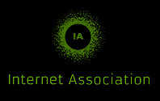

 





 


The U.S. government wants to use an obscure procedure—amending a federal rule known as Rule 41— to radically expand their authority to hack. The changes to Rule 41 would make it easier for them to break into our computers, take data, and engage in remote surveillance.
These changes could impact any person using a computer with Internet access anywhere in the world. However, they will disproportionately impact people using privacy-protective technologies, including Tor and VPNs.
The U.S. Congress only has until December 1st to stop the changes from taking effect.
We need to speak out. Sign our petition and join our day of action.
Reject the changes to Rule 41 of the Federal Rules of Criminal Procedure by passing the Stopping Mass Hacking Act.
Rule 41 authorizes federal magistrate judges to issue warrants for law enforcement searches and seizures. But it contains an important limitation: it requires the government to get a warrant from a judge in the jurisdiction where they want to conduct the search, except in certain limited circumstances. The amendments to Rule 41 would water down that restriction, allowing the government to apply for warrants in one jurisdiction to conduct remote searches of computers located in another. The changes would apply:
When someone uses "technological means" to conceal the location of his or her computer; or
When investigating botnets, where damaged computers are located in 5 or more districts.
Read the proposed update to Rule 41 (PDF).
50 organizations—including public interest groups, privacy tool providers, and Internet companies—have united to speak out against the changes to Rule 41.
The rule changes could dramatically increase the frequency of law enforcement agents hacking into computers. That's because the changes would authorize almost any federal magistrate judge in the country to issue these warrants. Law enforcement can forum shop, finding the most prosecution-friendly or technically unsophisticated magistrate in the United States to sign off on these dangerous warrants.
Under these rule changes, judges in almost any U.S. district could authorize law enforcement to remotely search or hack into the computers of people in cases where their privacy protective technology obscures the location of their computer. This means those most concerned about privacy are likely to be disproportionately impacted by this rule change.
In many cases, magistrate judges would likely be unknowingly signing off on warrants for computers located all over the world, not just in the United States, regardless of the legal protections of other countries.
The rule changes also invite law enforcement to seek a single warrant to remotely search thousands of computers—in violation of the protections of the Fourth Amendment of the U.S. Constitution and international human rights law.
Hacking—stealthily breaking into computers, copying data, deleting data, or executing code—can have serious consequences for users and their devices. A government agent could actually do more damage to the computers of innocent users during a botnet investigation than the botnet itself. If Congress ever takes the extreme step of authorizing government hacking, it must have strict limitations on when such action is allowed and strong protections for users consistent with the U.S. Constitution and international law.
If the U.S. Congress does not act, this new rule update will simply go into effect on December 1, 2016. That’s why Congress must speak out and disavow this rule change. Sign the petition.
Any expansion of law enforcement’s ability to remotely attack computers should be thoroughly considered by Congress, not passed off as a minor procedural adjustment. Yet Rule 41 would grossly expand the power of law enforcement to seek orders to attack and exploit computers around the country and around the world, with no statutory guidance, safeguards, or consequences for the harm they will cause.
Cindy Cohn, Executive Director of the Electronic Frontier FoundationI believe that government hacking is one of the gravest threats we face to our privacy and security. Consider how our devices have become seamless extensions of our lives, replacing our journals, address books, filing cabinets, and photo albums. Do we really want to allow governments broad access to this part of ourselves? It will give governments too much information about—and therefore too much power over—each of us.
Dr. Gus Hosein, Director of Privacy InternationalI stand by the Stopping Mass Hacking Act because I am not yet convinced that the proposed changes to Rule 41 are wise or necessary. This rule change is designed to streamline investigative techniques that allow law enforcement to gain unauthorized access and control to remote computer systems. Until Congress has had an opportunity to examine this proposal in detail—and until we have adequately addressed the privacy concerns raised by my colleagues—this rule change should not take effect.
Representative John Conyers (D-MI)We’re in the midst right now of one of the biggest battles in the privacy world that we have faced. If we keep down this path, we’re going to wake up in a few years in George Orwell’s 1984. This is why, as we fight for security, any intrusion on privacy needs to be narrowly tailored and aggressively overseen.
Representative Blake Farenthold (R-TX)If Congress doesn’t stop these changes, a single judge will be able to grant a warrant to hack a million (or more) computers and other devices. By hacking the devices of victims of a botnet, the government will be treating victims the same way it treats attackers. We need to pass my Stopping Mass Hacking (SMH) Act right now.
Senator Ron Wyden (D-OR)Privacy is a right for all of us. The changes to Rule 41 would allow the US government to remotely search—or even try to hack—the computers of Tor users and others who use privacy-protecting technology. Thousands of computers could be searched with a single warrant. This is a major policy change—-without any input from Congress. We oppose it.
Shari Steele, Executive Director of the Tor ProjectWhatever euphemism the FBI uses to describe it—whether they call it a ‘remote access search’ or a ‘network investigative technique’ or ‘equipment interference’—what we’re talking about is government hacking, and this obscure rule change would authorize a whole lot more of it. We've never had any public debate about this important issue even though the feds have been remotely hacking into computers since the turn of the century. Now is the time for Congress to finally hold hearings, shine a light on the government’s hacking practices, and have that debate, rather than simply stand by and passively allow this power-grab to proceed.
Kevin Bankston, Director, New America’s Open Technology InstituteWhile our law enforcement policies need to be updated to reflect the 21st century, Congress should be the one deliberating policy, not a back room judicial committee. We cannot give the federal government a blank check to infringe upon our civil liberties.
Senator Steve Daines (R-MT)The changes to Rule 41 harm both our human right to privacy and the cybersecurity of innocent users. Even worse, these changes are hidden from the public behind obscure procedural rules. The U.S. Congress needs to consider the rights of users all around the world, and insist on a public conversation about government hacking.
Brett Solomon, Executive Director Access NowWe oppose Rule 41 because we believe people should be able to use the Internet privately and securely. We're standing up for our users and everyone who believes that advances in technology shouldn't come at the cost of our privacy or security. Government surveillance tools should be the product of a reasoned and careful public debate—we welcome that debate in Congress.
Gabriel Weinberg, CEO & Founder, DuckDuckGoWe oppose Rule 41 because we believe people should be able to use the Internet privately and securely. We're standing up for our users and everyone who believes that advances in technology shouldn't come at the cost of our privacy or security. Government surveillance tools should be the product of a reasoned and careful public debate—we welcome that debate in Congress.
Representative Ted Poe (R-TX)


